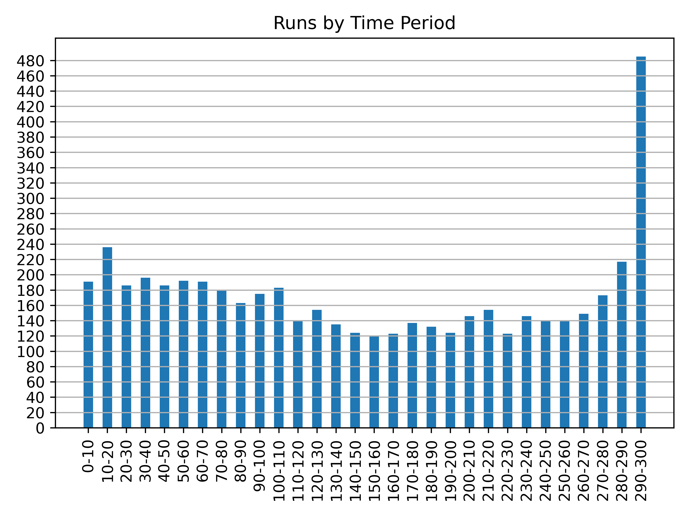
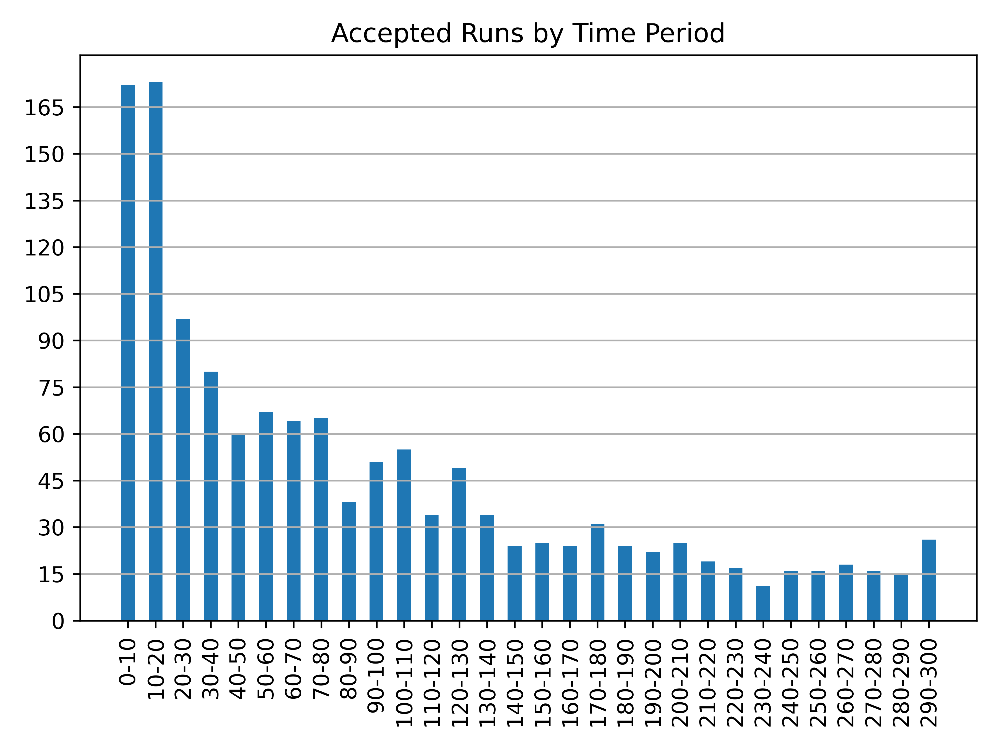

Presentación
La programación competitiva es uno de los espacios formativos más desafiantes para el desarrollo del pensamiento algorítmico, la resolución creativa de problemas y el trabajo en equipo. En el ámbito universitario, competencias como la International Collegiate Programming Contest (ICPC) han contribuido a formar generaciones de estudiantes que no solo destacan por su dominio técnico, sino también por su disciplina, resiliencia y pasión por aprender.
En este contexto, el presente libro —Programación Competitiva Universitaria: 112 consejos para dominar la ICPC— constituye una contribución al fortalecimiento de este proceso formativo extracurricular en nuestra Universidad, Latinoamérica y el mundo. Su autor, Rodrigo Salguero, es un competidor boliviano que ha representado a la Universidad Mayor de San Simón (UMSS) y a nuestro país en dos finales mundiales de la ICPC. Su experiencia, acumulada a lo largo de años de entrenamiento, creación de problemas para competencias, formación de futuros competidores y creación de espacios para una formación continua de un programador competitivo, se traduce aquí en una guía práctica, honesta y profundamente útil.
Este libro no solo reúne técnicas y estrategias, sino también una filosofía de aprendizaje basada en la constancia, la autocrítica y el espíritu de colaboración. Estas características convierten a este libro en una herramienta de gran provecho para los actuales y futuros competidores, entrenadores y entusiastas de la programación competitiva en Bolivia y América Latina.
Invitamos a los que gustan de la experiencia de programación con adrenalina competitiva a adentrarse en este compendio con curiosidad y mente abierta. Algunos consejos serán familiares; otros, nuevos y desafiantes. En todos ellos, sin embargo, encontrarán la voz de un competidor que comparte su experiencia con generosidad, con el deseo de inspirar a quienes buscan ir más allá de sus propios límites.
Leticia Blanco
Vladimir Costas
Equipo ICPC
Universidad Mayor de San Simón
Prólogo
Mientras uno entrena para competencias ICPC, es importante pensar de forma crítica en las acciones que se toman tanto fuera como dentro de las competencias. Si uno no tiene cuidado, es fácil caer en hábitos que estanquen el progreso del equipo. Considero que este libro provee una solución a este problema y contiene información que me hubiera gustado tener cuando recién estaba empezando en el mundo de las competencias de programación.
Quiero dar énfasis a las secciones que hablan sobre las tres fases de una competencia y a los consejos para después de la competencia. Recomiendo a todos los equipos dar especial importancia a estas secciones y tener presentes los consejos en cada etapa de su entrenamiento.
Por último, y complementando al consejo 23, nada de esto les servirá si no entrenan en equipo. Toda esta información puede parecer abrumadora, pero verán que, con el tiempo, se volverá algo natural e instintivo. Así que, ¡a entrenar!
Miguel Ortiz
Cochabamba, Bolivia
2025
112 CONSEJOS PARA DOMINAR LA ICPC
A continuación, se presentan 112 consejos destinados a la preparación, el entrenamiento y el desempeño en competencias de programación universitaria como la ICPC. Cada consejo se ha escrito como una recomendación clara, puntual, aplicable y respaldada por experiencia y análisis.
Los consejos están numerados de forma continua, lo que facilita su consulta y seguimiento. Dentro de cada sección, se cuenta con prácticas agrupadas por intención u objetivo común. Cada sección cuenta con párrafos complementarios, cuyo objetivo es ayudar a entender mejor su utilidad, contexto o nivel de aplicabilidad.
Esta guía se puede leer secuencialmente de principio a fin, o bien utilizarse como material de consulta según la necesidad del lector. Su diseño busca ser útil tanto para competidores individuales (iniciales o avanzados), como para equipos y entrenadores que buscan una herramienta concreta y adaptable para alcanzar un alto rendimiento competitivo.
Inicio
Prácticas enfocadas en los primeros pasos para mejorar habilidades básicas y establecer fundamentos sólidos:
- 1Resolver gran cantidad de problemas fáciles e incrementar gradualmente la dificultad.
- 2Si se conoce a alguien que tenga experiencia en programación competitiva, hacerle preguntas, pedir ayuda y si es posible clases de apoyo.
- 3Conseguir algún libro base y leerlo de principio a fin.
- 4Para formar un equipo tomar en cuenta personas que: tengan buena relación, tengan buena comunicación, les divierta resolver problemas, les guste programar, compartan objetivos, compartan el nivel de compromiso, cuenten con habilidades complementarias, tengan experiencia y nivel competitivo similar.
- 5Alcanzar un nivel adecuado de lectura de inglés para comprender correctamente enunciados y editoriales de problemas, mientras se amplía de manera constante el vocabulario.
- 6Practicar constantemente dactilografía para incrementar la velocidad de escritura de código, se considera aceptable poder escribir sin mirar el teclado con un mínimo de 50 palabras por minuto.
Prácticamente, para tener un buen inicio no hace falta ser meticulosos, tener gente que te guie y te acompañe suele ser lo más valioso y lo que te mantiene enfocado.
Claro está que hay que dedicarle el tiempo merecido resolviendo grandes cantidades de problemas y leer sobre los algoritmos básicos.
El consejo 3 es flexible en su aplicación porque existen múltiples formas de adquirir el conocimiento el propósito se centra en asegurarse de cubrir todos los temas básicos que se pueda.
Los consejos 5 y 6 no son esenciales, pero pueden evitar el tener desventajas ante otros competidores.
Entrenamiento individual
Prácticas diseñadas para desarrollar la capacidad individual mediante el entrenamiento constante, la mejora de habilidades técnicas y la consolidación del pensamiento algorítmico:
- 7Mantener un ritmo constante de entrenamiento y evitar dejar de entrenar por largos periodos de tiempo.
- 8Fuera de competencia, antes de comenzar a escribir código, estimar cuánto tiempo tomará hacerlo, medir el tiempo real hasta obtener un envío aceptado, y luego comparar ambos para mejorar gradualmente la precisión en la estimación.
- 9Fuera de competencia, reescribir varias veces el código de una solución difícil, hasta sentirse cómodo escribiendo un código similar sin dificultad.
- 10Después de resolver un problema preguntarse qué se hizo bien, que se hizo mal, cómo se podría haber resuelto en menos tiempo y que se aprendió mientras se resolvió el problema.
- 11Después de resolver un problema comparar la solución con la de otros competidores.
- 12Si después de resolver un problema se ha desarrollado una técnica que se cree puede servir para otros problemas, documentar dicha técnica y compartirla.
- 13Consumir incrementalmente la editorial de un problema, leer la primera oración de la explicación y luego pensar 5 minutos, continuar avanzando oración por oración, párrafo por párrafo, intentando deducir la solución por cuenta propia a partir de algún punto.
- 14Si después de leer un par de veces la editorial de un problema aún no se consigue entender la solución, copiarla a mano en una hoja de papel y leer un par de veces más.
- 15Si después de leer un par de veces la editorial de un problema aún no se consigue entender la solución, leer códigos aceptados disponibles de varios competidores.
- 16Si después de intentar comprender la solución de un problema de múltiples maneras y tras varias horas de esfuerzo aún no se entiende, archivarlo e intentarlo en otra ocasión.
- 17Leer códigos de algoritmos de distintas fuentes referenciales.
- 18Para consolidar el dominio de una técnica o algoritmo, revisarlo en detalle, anotar los puntos importantes y enseñarlo a competidores de menor nivel o que no estén familiarizados con esa técnica o algoritmo.
Ser constante es de las cosas más difíciles, pero también es de las que marcan más la diferencia. Tan simple y obvio como pueda sonar el consejo 7, es de los más importantes y quizás más difíciles de llevar a cabo.Como menciona Zhan Anri (soullless en Codeforces), autor del libro You might break – and that's ok [10] y medallista de oro en la European Junior Olympiad, retomar el hábito de resolver problemas después de una pausa prolongada es mucho más difícil que mantener una rutina mínima diaria.
Los consejos 8 y 9 aplicados con disciplina ocasionan una mejora enorme en las habilidades de codificación.
Los consejos del 10 al 12 están inspirados en las técnicas de resolución de problemas de George Pólya [8].
Los consejos del 13 al 16 aprovechan el hecho de que actualmente la mayoría de los problemas cuentan con explicaciones de calidad, lo cual nos permite experimentar para nutrir y entrenar la mente para la resolución de problemas.Es aconsejable que cada competidor encuentre su propia forma de cuándo y cómo leer las editoriales.
Entrenamiento en equipo
Prácticas orientadas a desarrollar equipos sincronizados y resilientes, con la capacidad de tomar decisiones acertadas y resolver problemas en conjunto bajo presión en escenarios competitivos:
- 19Desarrollar amistad entre los integrantes del equipo.
- 20Desarrollar comunicación efectiva entre los integrantes del equipo.
- 21Conocer las fortalezas y debilidades de cada miembro del equipo.
- 22Entre compañeros de equipo desarrollar estilos de programación similares.
- 23Participar en la mayor cantidad de competencias que se pueda.
- 24Participar en campamentos de programación.
- 25Realizar sesiones de entrenamiento entre varios equipos.
- 26Entrenar con competencias/problemas que cuenten con editorial y acceso a códigos aceptados para su posterior lectura.
- 27Para mejorar la dinámica de resolución de problemas en equipo, seleccionar problemas difíciles y resolverlos en grupos de 2 o 3 personas, practicando el pensamiento en voz alta, el intercambio de ideas, la creatividad, la discusión productiva, y la refutación de ideas erróneas.
- 28Dividir los temas básicos entre los miembros del equipo, comprometiéndose a aprenderlos individualmente para conseguir un mayor alcance colectivo.
- 29Asegurar que con el tiempo cada miembro del equipo domine todos los temas básicos y luego continúe especializándose en temas más avanzados.
- 30En el equipo contar con al menos 2 expertos en cada área, para evitar una sobrecarga de trabajo y tener el respaldo necesario en momentos críticos.
Del 19 al 22 son recomendaciones que la mayoría de los autores aconsejan de forma explícita, lo cual sugiere que la conexión entre los miembros de equipo es crucial, que debe cultivarse, nutrirse y al que conviene dedicarle todo el tiempo posible. Un equipo que se conoce a sí mismo y que compensa desventajas individuales solo se forma participando en muchas competencias y simulaciones juntos. Finalmente, los consejos del 28 al 30 son consignas que describen el progreso natural de un equipo que decide cubrir el gran abanico de temas presentes en la ICPC.
Antes de la competencia
Prácticas centradas en la preparación previa al evento competitivo, que incluyen la organización del material de consulta y acuerdos hechos por el equipo:
- 31Mantener un listado con conceptos, fórmulas, constantes y teoremas para consultas rápidas.
- 32Mantener un listado con hechos relevantes, recordatorios, errores comunes a evitar, buenas prácticas y estrategias.
- 33Mantener el team notebook con implementaciones cortas y rápidas de algoritmos clásicos o códigos difíciles de memorizar.
- 34En el team notebook, es aceptable incluir algoritmos a modo de caja negra, conociendo solo su propósito y su complejidad espacio-temporal.
- 35Priorizar la calidad antes que la cantidad al agregar contenido al team notebook.
- 36Llevar un diccionario de bolsillo Inglés-Español a las competencias.
- 37Establecer de antemano un orden fijo y la porción de problemas que cada integrante del equipo leerá, mantener ese plan en todas las ocasiones.
- 38Designar como líder de equipo a la persona con mayor experiencia y criterio, quien tomará las decisiones finales con el respaldo del equipo.
Tener material de referencia completo y de calidad, elaborado por los integrantes del equipo cada vez que se aprende un nuevo tema o una lección ayuda a reducir la incertidumbre y fortalecer la confianza del equipo. No es suficiente contar con material de calidad, sino que es fundamental saber usarlo durante la competencia. Los consejos 37 y 38 hacen referencia a que el equipo debe tener bien establecidas sus rutinas durante la competencia y tener planes de contingencia en los momentos de tomar decisiones. Dado que estos pueden llegar a ser muy variados y dependen de cada equipo, no se los detalla exhaustivamente en esta guía.
Durante la competencia (simulación)
Prácticas a tomar en cuenta durante simulaciones de competencia, para reforzar las dinámicas de equipo en un entorno controlado:
- 39Simular competencias oficiales en equipo procurando replicar las condiciones de competencias oficiales.
- 40Tener entrenamientos largos (5 horas), para incrementar la resistencia.
- 41Evitar entrenamientos cortos (menores 5 horas), pero realizarlos si es que la alternativa sería no entrenar.
- 42Probar diferentes estrategias, afinarlas y ajustarlas según cómo responda el equipo.
- 43Hacer la prueba con programación en pares.
- 44Realizar prácticas de lectura de problemas en equipo al simular competencias: al inicio leer todos los problemas sin resolver ninguno, discutir las dificultades de cada uno, comparar las predicciones con el scoreboard y luego continuar con la simulación.
- 45En simulaciones, registrar el estado de la competencia cada 30 minutos (para competencias de 5 horas) para tener conciencia del comportamiento del equipo. Este registro debe incluir la cantidad de problemas leídos, resueltos e intentados, junto con un resumen de lo sucedido en los últimos 30 minutos.
- 46Durante simulaciones de competencias, copiar los algoritmos del team notebook a mano, tal como se hace en competencias oficiales.
El objetivo principal de hacer simulaciones no tiene por qué ser siempre el de quedar lo más arriba posible en los standings.
Las simulaciones son un espacio en el que el equipo puede experimentar y probar cualquier idea y estrategia que se les ocurra; son una oportunidad para que el equipo se conozca mejor a sí mismo y fortalezca sus debilidades.
Al mismo tiempo, las simulaciones son una herramienta valiosa para replicar a voluntad las condiciones de competencias oficiales y ensayar el desempeño del equipo bajo su máxima exigencia, de modo que lleguen a las competencias reales con más experiencia y criterio.
Durante la competencia (competencia real)
Prácticas aplicables directamente durante el desarrollo de una competencia oficial, centradas en la toma de decisiones, asignación de tareas, gestión del tiempo y comunicación en tiempo real.
Al tratarse de la sección más extensa, las recomendaciones se presentan en diez partes, organizadas según un orden lógico basado en las fases cronológicas de la competencia y en el proceso de resolución de problemas.
Apertura y juego temprano
- 47Al inicio de la competencia identificar el problema fácil e iniciar su resolución lo más antes posible.
- 48Durante competencias y simulaciones mantener una hoja con una tabla donde cada problema tenga su sección, anotando el tema, la dificultad o un resumen breve; tachar los problemas resueltos.
- 49Durante la primera hora de competencia leer todos los problemas e identificar los fáciles, medios y difíciles.
- 50Al decidir qué problema resolver a continuación, consultar el scoreboard para guiarse por los problemas más resueltos, ya que suelen ser los más accesibles.
- 51Priorizar el trabajo individual mientras se resuelven problemas fáciles.
- 52Cada miembro del equipo debe estar consciente del estado de la competencia en todo momento.
- 53En las primeras horas de competencia procurar resolver los problemas fáciles y trabajar en los problemas medios.
La fase inicial establece el clima de la competencia, es importante empezar con una mentalidad energética y optimista, pero no confiada. También, saber identificar los problemas fáciles desde el inicio es crucial. Aunque los standings puedan dar dicha información, utilizarlos como primera fuente de información implica estar por debajo de los primeros lugares.
Suele ser efectivo analizar rápidamente los enunciados, clasificarlos por dificultad e identificar los problemas más fáciles antes que otros equipos, leyendo tantos enunciados como sea posible desde el principio. Una vez identificados los problemas, el equipo puede planificar con mayor comodidad su estrategia para el resto de la competencia.
Cabe recalcar que, la división de las fases de la competencia como apertura, juego medio y final se inspira en la propuesta realizada por Bloomfield & Sotomayor [3], quienes en su artículo A Programming Contest Strategy Guide divide a la competencia en estas etapas con características, objetivos y dinámicas específicas.
Juego medio
- 54Una vez resueltos los problemas fáciles, asegurarse de tener claro de qué tratan los problemas disponibles antes de decidir qué problema resolver a continuación.
- 55Entre la segunda y cuarta hora de competencia identificar qué problemas difíciles se intentarán resolver.
- 56Abordar los problemas difíciles desde más temprano si se estima que de esta forma se resolverá una mayor cantidad de problemas, estando conscientes de que eso conlleva el riesgo de una mayor penalidad por tiempo.
- 57Si se decide trabajar en un problema difícil, empezar lo más antes posible.
- 58Procurar resolver los problemas difíciles en equipo.
En la fase intermedia de la competencia es cuando los cerebros ya están calientes, y es la oportunidad para resolver los problemas más importantes. Es importante tener clara la situación y asignar los problemas correctos a los integrantes adecuados. Las decisiones que se tomen acá se reflejan en cómo se sentirá el equipo al final de la competencia: si agotado o listo para correr el último sprint.
Un detalle sobre el consejo 56, es que está inspirado en el artículo de Trotman & Handley [11], donde primeramente se demuestra que encontrar la estrategia óptima para maximizar la cantidad de problemas resueltos es un problema NP-completo. Es por eso que argumentan que en ocasiones, enfocarse en los problemas difíciles desde más temprano, en ciertas ocasiones permite resolver más problemas en total, lo que se traduce a una mejor posición en el ranking final. También, muestran que si el objetivo es minimizar la penalidad por tiempo, basta con resolver los problemas en orden de dificultad ascendente. Es por eso que es crucial contar con buen criterio para poder identificar si es que la situación amerita reducir la penalidad por tiempo, apostar por resolver más problemas en total o buscar un equilibrio entre ambos extremos.
Juego final
- 59En la última hora y media de competencia, incrementar la prioridad al uso de la computadora para la depuración de errores.
- 60Al iniciar la última hora de competencia, analizar la situación del equipo en la competencia y decidir en qué problemas se trabajará.
- 61En la última media hora de competencia, concentrarse únicamente en un problema los tres integrantes del equipo al mismo tiempo.
En la fase final de una competencia ICPC, las decisiones difíciles son tomadas, si apostar por varios problemas o elegir uno sólo y dejar los demás. Al igual que las demás fases, el apoyo y colaboración de todo el equipo es necesario. Aquí se demuestra la fortaleza mental después de 4 horas de competencia, es cuando una vez una decisión es tomada, se deja de lado las emociones y se da todo lo que se tiene para cumplir el objetivo final.
Siempre es posible que existan excepciones, pero los datos estadísticos muestran lo que sucede en la mayoría de los casos. En este periodo la cantidad de envíos suele ser mayor al del resto de la competencia, pero la proporción de envíos versus soluciones aceptadas es la menor, de igual forma la cantidad de soluciones aceptadas no es mayor. Esto puede observarse en las figuras a continuación, las cuales ilustran este fenómeno con datos de la etapa regional latinoamericana ICPC 2024.


Actitud y enfoque competitivo
- 62Durante la competencia, actuar objetivamente, enfocándose en resolver la mayor cantidad de problemas con la menor penalización posible.
- 63Durante la competencia, procurar actuar de tal forma que se minimicen los errores.
- 64Evitar peleas y tonos defensivos entre compañeros de equipo.
- 65No perder los estribos durante la competencia y siempre tratar de dar lo mejor de uno mismo.
- 66Ya que no se tiene información perfecta, tomar riesgos.
La actitud que se adopta durante la competencia impacta en el rendimiento del equipo. Actuar con objetividad, mantener la calma y generar un ambiente de respeto permite tomar mejores decisiones incluso en momentos críticos.
Lectura de problemas
- 67Al inicio de la competencia, echar un vistazo a los enunciados de los problemas para elegir cual leer primero basándose en intuición y simplicidad del enunciado.
- 68Al inicio de la competencia, hacer lecturas rápidas de los problemas con el objetivo inicial de identificar los más fáciles.
- 69Al leer un problema, identificar si los primeros párrafos son una historia no relacionada a lo que te pide el problema para saltarse esa parte.
- 70Al leer un problema, prestar atención a cada vez que aparece algún número o variable.
- 71Al leer un problema, prestar atención a definiciones o descripciones de procedimientos, estos suelen estar listados.
- 72Al leer un problema, prestar atención a las últimas oraciones del enunciado, ahí suelen resumir en pocas palabras qué es lo que pide el problema.
- 73Al leer un problema, prestar atención a los límites establecidos en la descripción del input, esto suele dar pistas acerca de qué técnicas o algoritmos se pueden aplicar para la resolución del problema.
- 74Al leer un problema, prestar atención a la descripción del output, esto suele describir en pocas palabras lo que pide el problema.
- 75Al leer un problema, tener en cuenta que si algo no está escrito en el enunciado, no significa que sea falso, y si algo no está escrito en el enunciado, no significa que sea verdadero.
- 76Leer detalladamente un problema si no se cuenta con la suficiente confianza o experiencia para determinar que se lo ha entendido en la primera leída.
- 77Al leer detalladamente un problema, formular preguntas después de leer cada oración, por ejemplo: ¿Esto qué significa realmente? ¿Esto puede dar origen a algún caso especial? ¿Será que este detalle sea crucial para hallar la solución al problema? ¿Es esta información útil?
- 78Leer detalladamente un problema si es que no surgen ideas para abordar la solución, con el propósito de encontrar nuevos detalles.
- 79Leer detalladamente un problema si es que no se ha conseguido un veredicto aceptado al enviarlo.
El poder leer y entender de qué trata un problema rápidamente ahorra tiempo valioso. Entender mal un problema puede resultar en algo catastrófico. Mayor velocidad, mayor entendimiento y mejores trucos se consiguen, como siempre, entrenando. Es importante tomar en cuenta que, una correcta lectura y comprensión de los enunciados es el primer paso hacia la resolución de los problemas y una forma de evitar errores graves causados por descuidos.
Resolución de problemas
- 80Hacer una lluvia de ideas de algoritmos posibles que puedan resolver el problema y elegir el más fácil de modelar y codificar que funcione.
- 81Utilizar modelado matemático, transformación del problema o proposición de conjeturas con el fin de simplificar la solución del problema o el diseño del algoritmo.
- 82Cuando el problema requiera de cálculos matemáticos, anotar con claridad en papel las fórmulas simplificadas, listas para copiarlas directamente en el código.
- 83Para abordar un problema desafiante, proceder con calma, seleccionar los detalles relevantes y usarlos para deducir nuevos aspectos, formando así una cadena de implicaciones que lleve a la solución.
- 84Evitar la visión de túnel, mantener la mente abierta y si un problema no sale, pasarse a otro o intentar otras aproximaciones a la solución.
En general, el consejo más habitual para mejorar en la resolución de problemas es simplemente resolver problemas y de cierta forma desarrollar un método propio para la resolución de problemas. El libro How to Solve It de George Pólya [8] ofrece una excelente base para quienes desean estructurar y construir su propio método de resolución. Incluso si no se lo lee por completo, la estructura general presentada en los primeros capítulos es suficiente como punto de partida para sistematizar el pensamiento.
Paralelamente, desarrollar una buena intuición es altamente beneficioso. Colin Galen, un programador competitivo conocido por haber alcanzado el rango de grandmaster en Codeforces rápidamente y por compartir sus conocimientos en su canal de YouTube, cuenta con un video muy útil respecto a cómo desarrollar intuición en el ámbito de la programación competitiva. Se recomienda su video titulado Unlocking Your Intuition: How to Solve Hard Problems Easily [4].
¿Quién es el programador?
- 85Optar por que una sola persona escriba el código de la solución.
- 86Al resolver un problema en grupo, optar por que la persona que estime menor tiempo para programar la solución lo haga, considerando su experiencia y conocimiento en el tema.
- 87Si varios miembros pueden implementar la solución al mismo problema en un tiempo similar, elegir quién escribirá el código según sus habilidades y su capacidad para abordar los problemas restantes, priorizando el balance de la carga de trabajo.
- 88Cuando dos integrantes tengan cada uno un problema distinto listo para programar, priorizar el que se estime que tomará menos tiempo implementar su código.
Elegir quien programará cada solución ayuda a mantener la fluidez en la competencia y minimizar los errores. Este tipo de decisiones conviene tomarlas siendo objetivos y dejando los intereses personales de lado.
Escritura de código
- 89Antes de comenzar a escribir código, escribir en papel la composición del código a ser escrito a grandes rasgos, el ideal es escribir código sin dudar y reducir el tiempo de depuración al mínimo.
- 90Si la computadora está ocupada y se tiene pensado el diseño del algoritmo para un problema, escribir en papel el código de la solución.
- 91En una competencia oficial, si se necesita un algoritmo que está escrito en el team notebook, copiarlo del notebook.
- 92Cada que se escriba un bloque de código, por ejemplo, lectura de datos o la construcción de una estructura, compilar el código y corregir los errores de sintaxis.
- 93Cada que se escriba un bloque de código, leerlo y revisar si existe algún error lógico o de escritura.
- 94Durante la escritura de código escribir comentarios resaltando la lógica de cada bloque de código.
- 95Usar memoria extra si es que ayuda a simplificar la solución o acelerar el algoritmo.
- 96Utilizar fuerza bruta en cuanto se pueda, los algoritmos de fuerza bruta suelen ser más fáciles de implementar.
- 97No escribir código lo más rápido ni lo más corto posible; priorizar la claridad y simplicidad.
En sí, lo que se busca optimizar al escribir código es obtener lo más rápido posible un veredicto aceptado, con la menor penalidad por tiempo posible y sin ocupar el computador más tiempo del necesario. Para obtener aquello, es necesario hallar el equilibrio entre el tiempo dedicado a planificar, diseñar, codificar, probar y, si es necesario, depurar.
Rutinas de apoyo
- 98Solo usar la computadora para escribir, evitar pensar mientras se ocupa la computadora.
- 99Armar casos de prueba a mano para probar el código antes de enviarlo; un compañero que no esté codificando podría asistir en esta tarea.
- 100Antes de enviar el código, realizar una revisión rápida a la lógica de la solución y a la estructura del código.
- 101En una competencia oficial, mandar a imprimir el código inmediatamente después de enviar una solución al juez, para poder revisarlo sin ocupar la computadora en caso de ser rechazado.
- 102Durante la competencia, guardar todas las versiones del código que se escriban.
En competencias donde los recursos son limitados, como el tiempo y el uso compartido del computador, es vital establecer rutinas claras y consistentes para aprovechar al máximo dichos recursos y, al mismo tiempo, resolver la mayor cantidad de problemas con la menor penalidad de tiempo posible.
Control de daños
- 103Si un envío es rechazado por el juez, no entrar en pánico, enfocarse en encontrar el error.
- 104Evitar buscar errores en el código leyendo detalladamente línea por línea mientras se ocupa la computadora.
- 105Para detectar errores en el código durante la depuración, escribir rutinas de impresión del estado de las variables en varios bloques de código, hacer correr contra varios casos de prueba, imprimir físicamente los resultados y analizarlos dejando la computadora libre.
- 106No borrar las rutinas de impresión que se escribieron para depuración de código, mejor es comentarlas.
- 107Para validar o encontrar errores en el código, hacer pruebas de estrés, generar casos de prueba aleatorios y probar el código contra una solución menos eficiente, de la cual se tenga certeza de su correctitud.
- 108Después de 5 envíos incorrectos, pasarse a otro problema.
Aunque se intente minimizarlos, los errores suelen ser inevitables. Por eso, es necesario tener mecanismos de compensación, los cuales pueden marcar una gran diferencia. Mantener la calma, aplicar técnicas de depuración y saber cuándo cambiar de problema son habilidades que se desarrollan con la experiencia y reflejan la madurez competitiva.
El consejo 108 es más relevante para competidores iniciales, pero cualquiera puede caer en la trampa y la ceguera de aferrarse a un problema mal resuelto. Esto está respaldado por el estudio de Revilla, Manzoor y Lui [9], quienes señalan que cuando un competidor comete un tipo particular de error en un problema, tiende a repetirlo. También, observan que en promedio si alguien recibe 5 veredictos rechazados seguidos, el siguiente envío es 4 veces más probable de ser rechazado qué aceptado.
Después de la competencia
Prácticas orientadas a la retrospección y mejora continua tras la participación en competencias.
- 109No decepcionarse por tener un desempeño no deseado en alguna competencia.
- 110Después de una simulación o competencia oficial, discutir con el equipo qué se hizo bien, qué se hizo mal y qué se puede mejorar, también evaluar el desempeño de las estrategias aplicadas.
- 111Después de simular o participar en una competencia resolver un problema que se podía haber resuelto en la competencia, pero por motivos de tiempo o toma de decisiones no se logró.
- 112Después de simular o participar en una competencia resolver un problema que tomaría una cantidad exagerada de tiempo en resolver, o que no se cuente con la suficiente capacidad o el conocimiento para resolverlo. Hacerlo con ayuda de la editorial y con la lectura de códigos aceptados de ese problema o con la ayuda de otra persona que sí lo resolvió.
En su libro, soullless [10] destaca en el capítulo acerca de la mentalidad de los campeones, resalta que el ganar no se trata de nunca perder, sino de mantenerse en el juego incluso cuando todo parece derrumbarse. También recalca que un mal resultado solo es un punto en el gráfico y no representa todo el trayecto. Y pues, Así concluye el ciclo de la mejora continua: empezando de nuevo y siempre avanzando un poco más. Entonces, la directiva de entrenamiento se resume a: competir, resolver problemas pendientes, estudiar, resolver problemas avanzados, descansar y repetir.
Bonus
- Comprender los límites de tiempo utilizando la complejidad en Big O (constante < log n < n < n2 < n3 < 2n < n!) y aproximar el tiempo de ejecución, recordando que entre 108 y 109 operaciones suelen tomar alrededor de un segundo.
- Comprender los límites de memoria usando la complejidad en Big O, recordando que 1 entero ocupa 32 bits, 1 byte equivale a 8 bits, 1 kilobyte son 1024 bytes, y 1 megabyte son 1024 kilobytes.
- Contar con una base matemática sólida (álgebra, teoría de sets, lógica, combinatoria y conteo).
- Aprender a probar enunciados condicionales (prueba directa, prueba por contraposición, prueba por contradicción)
- Reconocer que los temas difíciles requieren tiempo, paciencia y que no es común dominarlos de la noche a la mañana.
- Entender que la habilidad y conocimiento en programación competitiva se construyen paso a paso a lo largo del tiempo.
- Merodear constantemente a través de los límites del practicante, permitiendo gradualmente superar fronteras previamente establecidas.
- Evitar usar tipos de datos de punto flotante (float, double), priorizar el uso de enteros
- Para competencias individuales resolver los problemas en orden del más fácil hacía el más difícil.
- Divertirse
- Evitar el uso de punteros y memoria dinámica cuando se pueda optar por estructuras más simples y eficientes.
- Utilizar macros de preprocesador en C++ para simplificar y agilizar la escritura de código.
- Utilizar alias de tipo, como 'typedef' o 'using' en C++, para una escritura de código más rápida.
Epílogo
El uso óptimo del algoritmo de estimación de tiempos, la re–priorización de problemas en base al menor tiempo estimado para obtener un AC, la idea de usar una cola de prioridad para gestionar los ACs, y saber cuándo ceder la computadora a un compañero con un AC más rápido: todo eso es algo que hubiera querido saber antes. Habría salvado muchas competencias, desde las IOI hasta la ICPC.
Entender que, al principio, no puedes estimar bien tu tiempo de AC es normal. Con el tiempo, madurarás y serás más perspicaz para saber dónde estás parado, y eso es lo importante. Uno no gana una competencia el día del concurso; se gana meses antes. Porque quien se prepara para la tormenta, duerme tranquilo la noche anterior. Uno gana la guerra mucho antes de que empiece.
No importa si no tomas el camino “óptimo” para llegar a ser un buen programador. No importa si resuelves los problemas de manera lógica e intuitiva, si entiendes la teoría al 100%, o si aprendes leyendo código y presentaciones. Al final, el resultado se medirá en la cantidad de Accepted que obtengas. Incluso si no es durante el contest, un AC en upsolve vale lo mismo: significa que creciste.
Aunque el camino sea largo y haya errores, el mayor talento que uno puede tener no es el IQ, sino la perseverancia y la disciplina. Ese es el talento que todos tienen, pero muy pocos deciden cultivar. Te sorprendería hasta dónde puedes llegar con solo disciplina.
Ronaldo Franco
Cochabamba, Bolivia
2025
Referencias
- Amraii, S. A. (2007). Observations on teamwork strategies in the ACM International Collegiate Programming Contest. Crossroads, 14(1), 9. https://doi.org/10.1145/1349332.1349341
- Arefin, A. S. (2006). Game plan for a contest. In A. S. Arefin, Art of Programming Contest: C Programming Tutorials, Data Structures, Algorithms (pp. 19–26). http://182.160.97.198:8080/xmlui/handle/123456789/962
- Bloomfield, A., & Sotomayor, B. (2016). A programming contest strategy guide. Proceedings of the 47th ACM Technical Symposium on Computing Science Education. https://doi.org/10.1145/2839509.2844642
- ColinGalen. (2022, noviembre 9). Unlocking your intuition: How to solve hard problems easily [Video]. YouTube. https://www.youtube.com/watch?v=1f6N2UrCK6o
- Ernst, F., Moelands, J., & Pieterse, S. (1996). Teamwork in programming contests: 3*1=4. Crossroads, 3(2). https://doi.org/10.1145/332132.332139
- Liu, R. (2008). Training ICPC teams: A technical guide. CLIS, Banff. https://www.cs.montana.edu/paxton/classes/ravensburg/materials/TrainingICPC.pdf
- Manzoor, S. (2001). Common mistakes in online and real-time contests. XRDS: Crossroads, The ACM Magazine for Students, 14, 10–16. http://arantxa.ii.uam.es/~swerc/p10-manzoor.pdf
- Pólya, G. (1957). How to solve it: A new aspect of mathematical method (2nd ed.). Princeton University Press.
- Revilla, M. A., Manzoor, S., & Liu, R. (2008). Competitive learning in informatics: The UVa Online Judge experience. Olympiads in Informatics, 2, 131–148. https://ioinformatics.org/journal/INFOL035.pdf
- soullless. (2025). I Wrote a Book — For Those Who Truly Want to Grow [Entrada de blog]. Codeforces. https://codeforces.com/blog/entry/141116
- Trotman, A., & Handley, C. M. (2008). Programming contest strategy. Computers & Education, 50(3), 821–837. https://doi.org/10.1016/j.compedu.2006.08.008